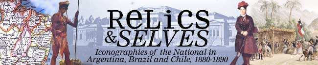

|  |
| Relics and Selves: Iconographies of the National in Argentina, Brazil and Chile was made possible by a research grant from the British Arts and Humanities Research Board (AHRB). In this section you will find further information on how this exhibition was created, as well as a call for papers to researchers who wish to contribute manuscripts on related subjects. |